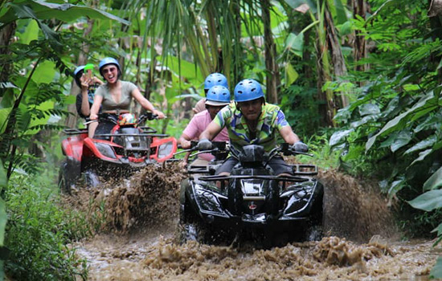
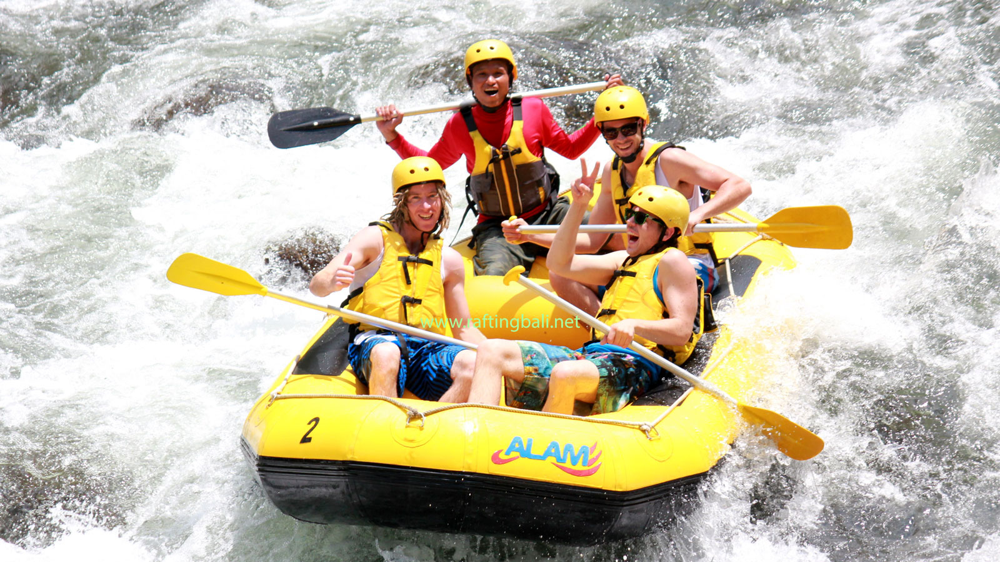
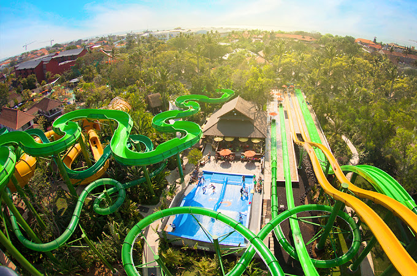
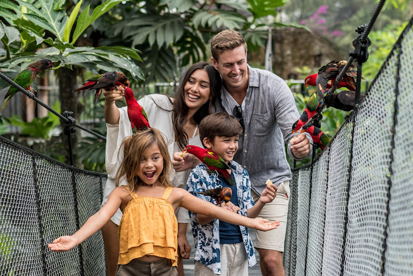
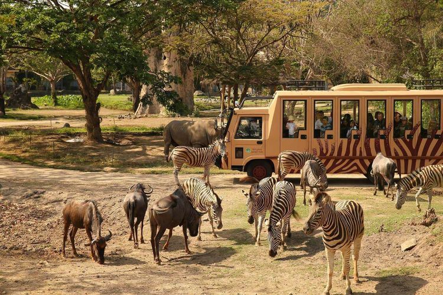
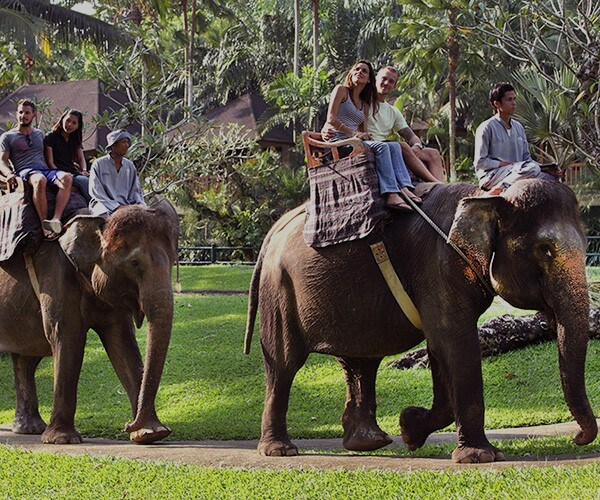
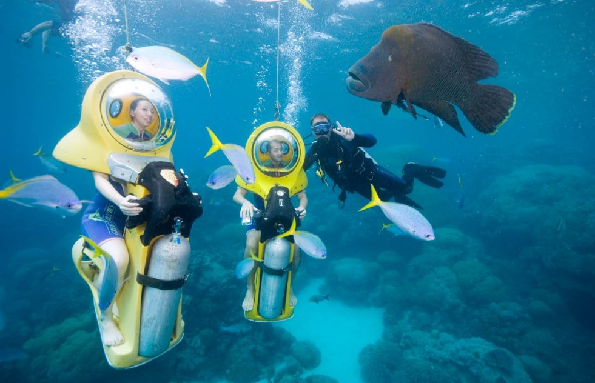
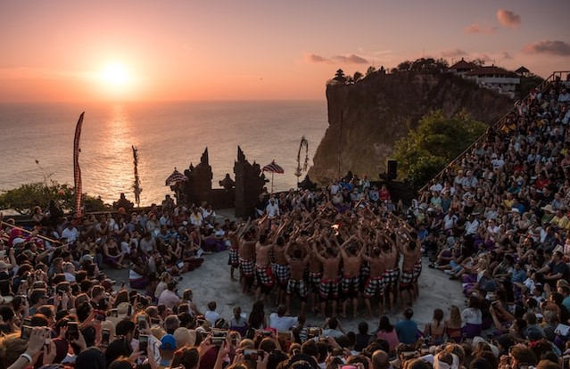
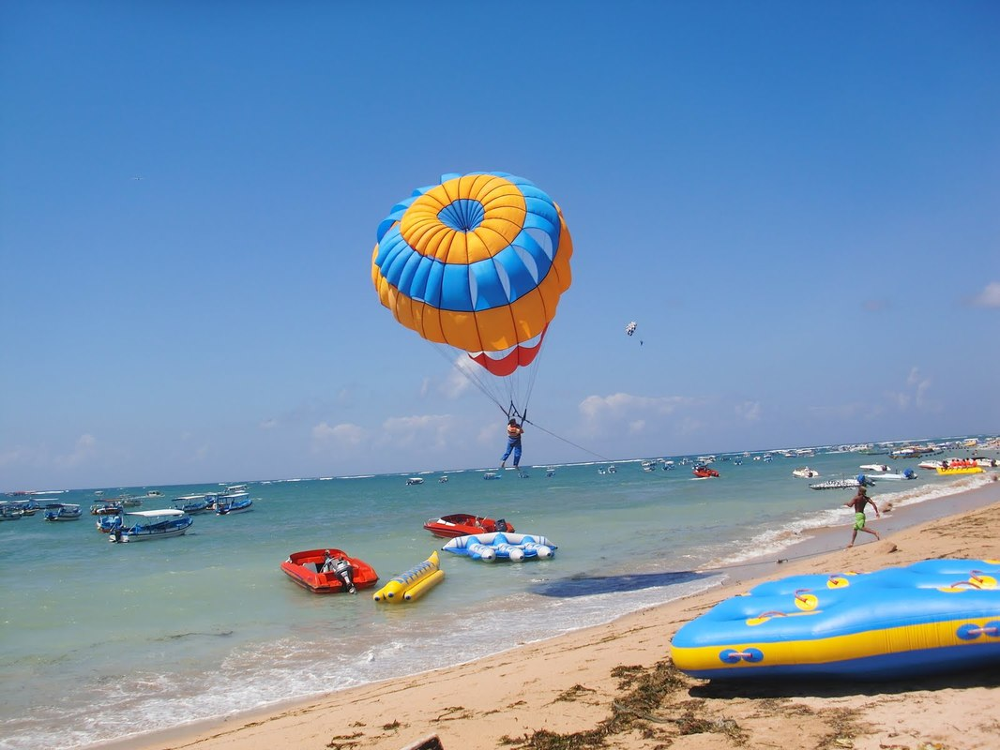

Destinasi Wisata Di Bali Yang Hits & Populer Buat Liburan
Bali adalah salah satu tujuan wisata terpopuler di dunia, dan tidak salah jika banyak orang memilih Bali sebagai tempat untuk berlibur. Tapi, dengan banyaknya destinasi wisata yang ada di Bali, pasti Anda bingung untuk memilih destinasi mana yang paling hits dan populer. Namun, tenang saja, dalam blog ini kami akan membahas mengenai destinasi wisata di Bali yang paling hits dan populer untuk Anda yang ingin berlibur ke Bali. Simak ulasan selengkapnya di bawah ini ya!
#1. Atlas Beach Club

Jl. Pantai Berawa No.88, Tibubeneng, Kec. Kuta Utara, Kabupaten Badung, Bali
Atlas Beach Club atau Atlas Beach Fest merupakan salah satu tempat hiburan yang berlokasi di Bali.Tempat hiburan ini terbilang cukup baru dan melalui informasi yang beredar, beach club ini semula bernama Holywings dengan pemilik sahamnya Hotman Paris dan Nikita Mirzani. tolong kembakan lagi kalimat ini agar lebih wah dan menarik
Atlas Beach Club atau Atlas Beach Fest menawarkan suasana yang tidak dapat ditemukan di tempat hiburan lainnya. Keindahan pantai Bali dikombinasikan dengan desain yang mewah dan elegan, membuat Anda merasa seperti berada di oasis pribadi. Bukan hanya itu, fasilitas dan hiburan yang ditawarkan pun sangat menawan, seperti bar berkonsep internasional, restoran dengan masakan lezat, dan berbagai acara seru seperti DJ performace, live music, dan lainnya.
Jika Anda mencari tempat hiburan yang unik dan luar biasa di Bali, Atlas Beach Club atau Atlas Beach Fest adalah pilihan yang tepat. Nikmati suasana indah pantai dan hiburan yang memukau bersama teman dan keluarga. Atlas Beach Club atau Atlas Beach Fest, pastikan Anda menjadi bagian dari pengalaman yang tak terlupakan di Bali.
#2. ATV Ride

ATV Ride adalah sebuah aktivitas petualangan yang melibatkan pengendaraan sepeda motor All-Terrain Vehicle (ATV) atau sering disebut Quad Bike. Anda akan menjelajahi alam Bali dari sudut pandang yang berbeda dengan mengendarai Quad Bike 250 cc semi otomatis. Sensasi berkendara yang menyenangkan dan pemandangan yang indah akan membuat Anda terpana. Melalui perjalanan yang memukau, Anda akan menemukan keindahan pedesaan Bali yang tersembunyi. Terjun langsung ke dalam alam dan merasakan keasrian yang autentik dari desa-desa yang masih asli. Tak hanya itu, Anda juga akan melintasi hutan bambu, sungai, dan taman yang indah. Jangan lewatkan kesempatan untuk menjelajahi Bali dari sisi yang berbeda melalui dengan ATV Ride. Berpetualang, bersenang-senang, dan menikmati pemandangan yang spektakuler hanya dengan mengendarai Quad Bike 250 cc semi otomatis.ATV Ride adalah salah satu aktivitas terbaik yang tidak boleh Anda lewatkan saat berlibur di Bali.
#3. Rafting

Rafting adalah salah satu aktivitas air yang populer di Bali yang memungkinkan Anda untuk merasakan sensasi berpetualang di sungai yang mengalir dengan deras. Rafting menawarkan pengalaman yang menyenangkan dan menantang bagi mereka yang menyukai aktivitas alam dan petualangan. Anda akan bekerja sama dengan rekan seperahu untuk mengarungi arus sungai dan menghadapi rintangan yang ada di jalur rafting. Rafting di Bali menawarkan pemandangan alam yang indah dan pengalaman yang tidak terlupakan bagi para wisatawan yang mencari petualangan baru.
#4. Waterbom Bali

Selama tiga tahun berturut-turut, wisata taman air di Pulau Bali telah meraih penghargaan sebagai taman air terbaik di Asia dan peringkat kedua terbaik di dunia. Bayangkan betapa serunya wahana air yang ada di Waterboom Bali. Jika Anda suka tantangan yang menguji adrenalin, maka Anda harus mencoba berbagai wahana seperti wsuper bowl, jungle rides, ace track, boomerang, dan masih banyak lagi. Tak hanya wahana yang menarik, pemandangan di sekitar Waterboom Bali juga sangat memukau. Taman tropis yang terletak di kawasan wisata ini sangat indah dan menyenangkan untuk dilihat. Wisata ini terbuka setiap hari mulai pukul 9 pagi hingga 6 sore WITA dan luasnya mencapai 3,8 hektar.
#5. bali bird park

Pada tahun 1995, dibuka wisata keluarga yang luasnya mencapai 2 hektar, yakni Bali Bird Park. Taman burung ini merupakan salah satu yang terbesar di Indonesia dengan kurang lebih 1.000 satwa dari 250 spesies unggas yang dapat dilihat. Selain melihat langsung berbagai jenis burung yang menarik, pengunjung juga dapat merasakan pengalaman yang luar biasa dengan mengunjungi teater 4D. Bali Bird Park buka setiap hari kecuali pada hari Raya Nyepi, mulai pukul 9 pagi hingga 5.30 sore WITA.
#6. Bali Safari And Marine Park

Bali Safari and Marine Park adalah Taman Safari Indonesia 3 dan menjadi salah satu wisata menarik lain yang patut dikunjungi saat berada di Bali. Tempat ini berfungsi sebagai penangkaran bagi hewan-hewan yang terancam punah. Konsep Bali Safari and Marine Park memungkinkan pengunjung untuk mengalami safari dengan melintasi wilayah Bali Modern dan kemudian memasuki wilayah Bali kuno yang memberikan pelajaran sejarah, mitos, filosofi, dan lainnya yang terkait dengan kehidupan satwa liar. Ada sekitar 400 satwa yang tinggal di Bali Safari and Marine Park, yang berasal dari tiga wilayah yaitu India, Indonesia, dan Afrika. Beberapa satwa yang dapat dilihat di antaranya adalah rusa tutul, harimau Sumatera, beruang madu, jalak putih, beruang Himalaya, black buck, onta punuk satu, dan masih banyak lagi.
#7. Elephant Safari Park

Anda dapat merasakan pengalaman yang tak terlupakan bersama gajah di area seluas 2 hektar ini. Di Elephant Safari Park, pengunjung dapat menunggangi gajah, memberi makan, berfoto bersama, menikmati pertunjukan, termasuk melihat gajah yang bermain bola dan melukis. Taman ini buka setiap hari mulai pukul 08.00-18.00 WITA.
#8. Bali Underwater Scooter

Bali Underwater Scooter adalah destinasi wisata yang luar biasa untuk menikmati keindahan bawah laut Bali dengan cara yang tidak biasa. Di sini, pengunjung dapat mengendarai skuter di bawah air dan menikmati pemandangan yang indah. Dalam pengalaman ini, pengunjung dapat bernafas dengan normal karena dilengkapi dengan helm dan berbagai pelindung.
#9. Pura Luhur Uluwatu

Pura Uluwatu, dengan latar belakang panorama matahari terbenam, menawarkan pengalaman menikmati Tari Kecak yang sangat indah. Berlokasi sekitar 70 meter di atas tebing, Pura Uluwatu menjadi salah satu tempat terkenal di Bali, yang merupakan tempat ibadah dan obyek wisata. Turis dapat menikmati penampilan Tari Kecak yang sangat ikonik di teater luar ruangan pada pukul 18.00 WITA.
#10. tanjung benoa

Destinasi wisata populer lainnya di Bali adalah Tanjung Benoa, tempat yang dianggap sebagai surganya para pecinta olahraga air atau water sport. Di sini, kamu bisa menikmati berbagai aktivitas seperti diving, snorkeling, banana boat, flying fish, jet ski, parasailing, rolling donut, dan masih banyak lagi. Selain itu, keindahan pantainya pun tak kalah menarik dengan pasir putih, air laut biru, dan ombak yang besar. Tanjung Benoa menjadi pilihan tepat bagi kamu yang ingin merasakan sensasi tantangan adrenalin sekaligus menikmati keindahan pantai yang mempesona.
"Melalui ulasan dan rekomendasi yang kami berikan, Anda akan mendapatkan informasi yang lebih detail dan jelas tentang destinasi wisata populer di Bali. Dari destinasi wisata alam, budaya, hingga kuliner, kami akan memberikan pandangan yang obyektif dan menarik untuk Anda. Jadi, tunggu apa lagi? Ayo mulai mempersiapkan liburan impian Anda ke Bali bersama kami!"